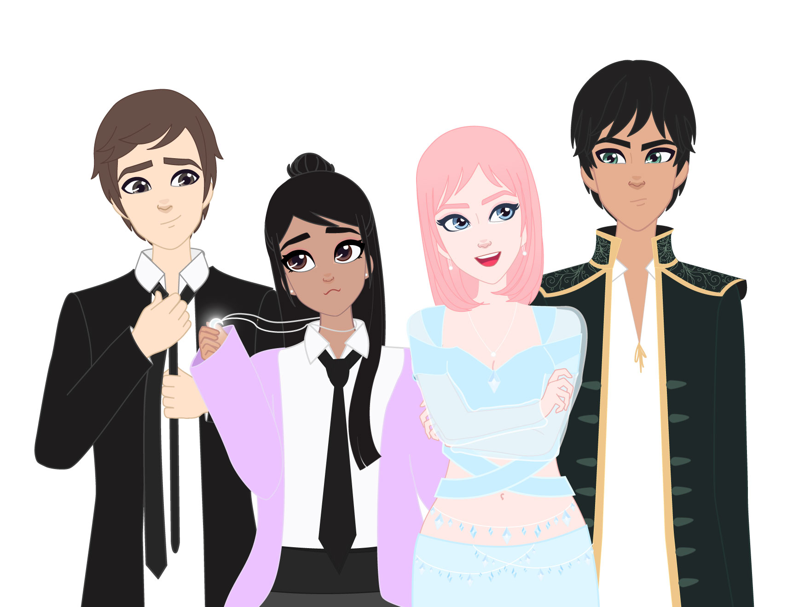

Claudia's Thesis Project is called "As you wish". It will be a show for kids and teenagers that will have humor, romance, action and drama. The story is about the new adventures of a normal teenager that becomes a witch after a magical accident, ending up with the power to control two genies. During the episodes all the characters will try to break free from their magical or emotional ties, discovering the real power of friendship, confidence and love.
This semester Claudia has been working in developing the characters design and personalities, the fictional universe, the script for the pilot and a storyboard for the last scene of this pilot, which she will be animating as a trailer for the show.

Artist Biography
Claudia Nunez is a Peruvian illustrator and animator who uses storytelling to connect motion and design, searching for new ways to remind children and adults that magic and kindness still exist.
Claudia graduated from the University of Lima with a Bachelor in Communication (2015 - Lima, Peru) and Licentiate in Audiovisual Communication (2018 - Lima, Peru). She is currently studying a Master of Fine Arts in Digital Media & Design at the University of Connecticut (USA). She has worked in the advertisement industry, focusing on digital media strategies, supported by motion graphics, illustration and graphic design. In 2018 she decided to return to Fiction writing, digital art and 2D animation, which is her real passion.
Interested in exploring new tools in Digital Art and taking the opportunities that Digital Animation can bring, she is now working in an animated project for children and teens, that can entertain but also educate about respect, love, and empathy.
Artist Statement
One of the main elements we lose as we grow up is our ability to be amazed. We are so used to the possibilities offered by technology, that nothing surprises us anymore, and we no longer use the word magic to define what we can't explain.
But there are - and there will be - times in our life, that something or someone manages to create such a ravishing impact, that you can almost feel it has a power beyond your words, beyond the perspective you thought your world was made of. Then and only then, you will believe that magic does exist, and can be found in your reality, it is just waiting for an exchange: your expectations for a chance.
Digital Animation executes this transaction without your permission and without you noticing it, it expands your imagination allowing you to believe. And even though it is the result of technology, it's a mechanism that clears the path for new perspectives. Among the different branches of art, the combination of character design, music and motion, manages to take your hand and take you through doors you forgot you could open, unlinking your judgment and breaking your rules, allowing you to accept things that with other mediums will be harder to see and understand.
Stories that are told with animation stay with you regardless of your age, and won’t only become nostalgia with time, but will establish a parallel to explore and compare during your life. The power of animation is in the hands of the one that creates it, and I want to use this power to prove my commitment to collect the magic that is still inside adults and grow the one that lives in children.